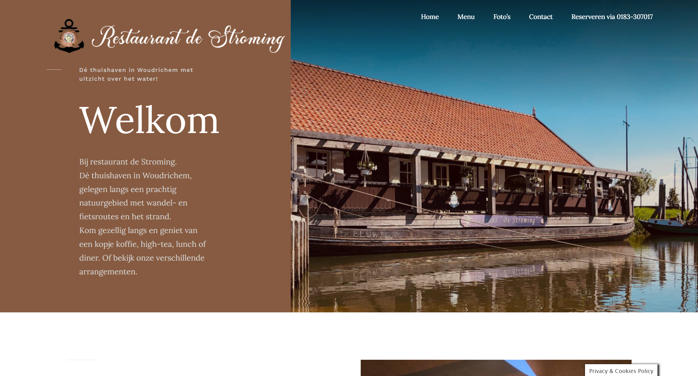

Welkom bij de portfolio van Thom Groenenberg
Projecten
Deze pagina is nog incompleet. Over de verloop van de tijd zullen hier nog veranderingen en updates worden toegevoegd.
 CLE 1: Samen met mijn team(peerteam 18) zijn wij bezig gegaan met het bouwen van een robot die bedoeld was om een uitgekozen probleem bij studenten op te lossen. Meer informatie over dit traject vindt je op de website van ons project.
CLE 1: Samen met mijn team(peerteam 18) zijn wij bezig gegaan met het bouwen van een robot die bedoeld was om een uitgekozen probleem bij studenten op te lossen. Meer informatie over dit traject vindt je op de website van ons project.

CLE 2: Tijdens deze sprint werk ik zelfstanding aan een reserveringssysteem voor Restaurant de Stroming. Hiervoor ben ik bezig om aan de al bestaande site een php pagina toe te voegen waar je kan reserveren. Zodra de website mijn update live zet, zal de link worden toegevoegd.